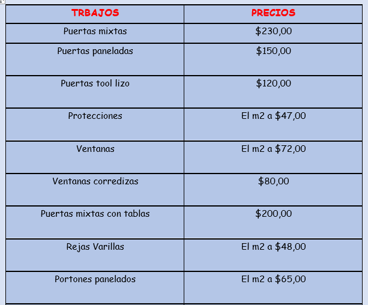

Ofrecemos distintos servicios como se mostrará a continuación, hemos decidido colocar su precio para que se informe mucho mejor:
Los trabajos que ofrecemos se mostrará a continuación incluyendo igual su precio:
